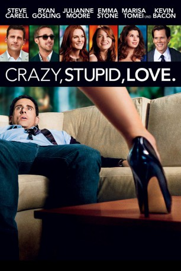
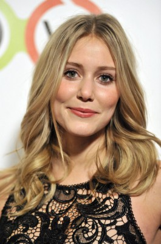
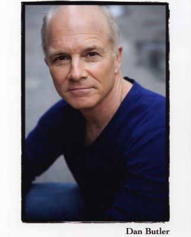
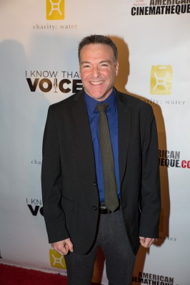

#35 Crazy, Stupid, Love.
 gesehen am 03.08.2017
gesehen am 03.08.2017
 
 IMDB-Wertung: 7.4 / 10
IMDB-Wertung: 7.4 / 10  Metascore: 68
Metascore: 68 
Das Leben von Cal Weaver scheint perfekt: ein guter Job, ein schönes Haus und tolle Kinder. Aus allen Wolken fällt Cal daher, als er erfährt, dass seine Frau Emily die Scheidung will! Die heile Familie fällt wie ein Kartenhaus zusammen und Cal findet sich von heute auf morgen als Single wieder - ein Single wohlgemerkt, der seit Jahrzehnten kein einziges Date mehr hatte. In einer Bar, in der er fortan seine Abende verbringt, trifft er auf den smarten Mitdreißiger Jacob Palmer, der ihn unter seine Fittiche nimmt. So wird Cal eine völlig neue Welt voller flirtwilliger Damen eröffnet. Doch nicht nur er, auch sein 13-jähriger Sohnemann ist auf der Suche nach dem weiblichen Geschlecht und hat ein Auge auf die 17-jährige Babysitterin geworfen: Jessica, die wiederum insgeheim in Cal verschossen ist. In all diesen Irrungen und Wirrungen muss Cal feststellen, dass zwar sein ganzes Leben einen neuen Weg eingeschlagen hat, sein Herz jedoch am liebsten eine Kehrtwende machen will...
Jahr: 2011
Dauer: 118 Minuten
FSK: 12
Land: USA Studio: Warner Bros.Tonspuren: DD5.1 - ,
Untertitel:
Auflösung: 1080p (1920×800) Größe: 8857 MB
Genre: Komödie, Drama, Liebe
Regisseur: Glenn Ficarra, John Requa
Drehbuch: Dan Fogelman
Soundtrack: Christophe Beck, Nick Urata
Darsteller:
 Steve Carell als Cal
Steve Carell als Cal Ryan Gosling als Jacob
Ryan Gosling als Jacob Julianne Moore als Emily
Julianne Moore als Emily Emma Stone als Hannah
Emma Stone als Hannah Analeigh Tipton als Jessica
Analeigh Tipton als Jessica- Jonah Bobo als Robbie
 Joey King als Molly
Joey King als Molly Marisa Tomei als Kate
Marisa Tomei als Kate- Beth Littleford als Claire
 John Carroll Lynch als Bernie
John Carroll Lynch als Bernie Kevin Bacon als David Lindhagen
Kevin Bacon als David Lindhagen- Liza Lapira als Liz
- Josh Groban als Richard
- Mekia Cox als Hip Hairdresser aka Tiffany
-  Julianna Guill als Madison
- Zayne Emory als Robbie's Friend, Eric
- Crystal Reed als Amy Johnson
- Joanne Brooks als Waitress for Cal and Kate
 Reggie Lee als Officer Huang
Reggie Lee als Officer Huang- Caitlin Thompson als Taylor
- Karolina Wydra als Jordyn
- Tracy Mulholland als Megan
- Katerina Kopel als Stephanie
- Janine Barris als Heather
- Jenny Mollen als Lisa
 Charlie Hartsock als Sad Sack
Charlie Hartsock als Sad Sack- Algerita Wynn als Robbie's Principal
- Wendy Worthington als Woman, Who Gives Cal Tour
-  Dan Butler als Cal's Boss
- Tiara Parker als Gabby
- Laurel Coppock als Sophia
- Rasika Mathur als Emily's Assistant
- Jasen Salvatore als Bartender #2
- Michael John Long Jr. als Bartender #3
 Christopher Darga als Lowe's Salesman #1
Christopher Darga als Lowe's Salesman #1-  Richard Steven Horvitz als Lowe's Salesman #3
- Megan James als Hannah's Colleague #1
- Rebecca Flinn als Hannah's Colleague #2
- Ehrin Marlow als Hannah's Colleague #4
- Christian Pitre als Waitress with Check
- Georgia Hurd als Jacob's Girl
- Jessica Diz als Olivia
- Jennifer Barbosa als Amy's Friend , uncredited
- Brian Patrick Butler als Student , uncredited
- Christian Cage als Man Flirting in Bar , uncredited
- Olga Fonda als Danielle , uncredited
- Leo Georgallis als Bar Patron , uncredited
- Lexi Giovagnoli als High School Girl , uncredited
- Greg Hain als Hot Guy at Bar , uncredited
- Ace Antonio Hall als Man at Bar , uncredited
Datei: X:\2011(A-F)\Crazy, Stupid, Love. (2011, FSK12, 1920x800).mkv seit 02.02.2015
Festplatte: HD 2010(G-Z)-2011(A-F)
 Es gibt insgesamt 86 Filme in der Gruppe '2011(A-F)'
Es gibt insgesamt 86 Filme in der Gruppe '2011(A-F)'